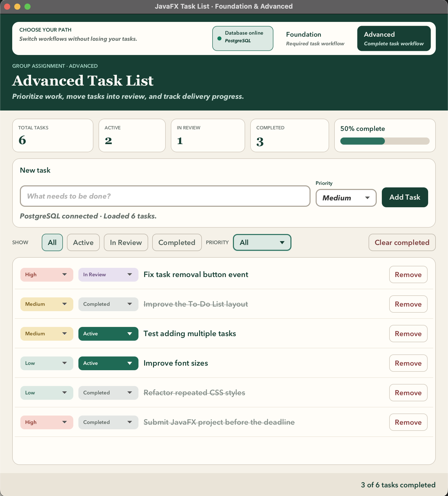

Hello! My name is Siarhei Hancharou. I am looking for an active and reliable
student who would like to join me in developing our
JavaFX + Event Handling group project.
The required deliverable is a JavaFX desktop task-management application. It demonstrates
FXML-based interface design, event handling, input validation, task creation, completion,
removal, filtering, and immediate user-interface updates.
The repository also contains optional Spring Boot, PostgreSQL, and Next.js modules. These
extensions allow the JavaFX and web applications to share tasks through a REST API, but our
first priority will remain the required JavaFX assignment.
Current Project Preview

Current Advanced workflow with shared PostgreSQL persistence, task priorities, statuses,
filters, and completion progress.
The current implementation already includes:
Foundation and Advanced workflows that preserve the same task list;
task creation, completion, removal, priorities, and workflow statuses;
status and priority filters with completion statistics;
shared task persistence through the Spring Boot API and PostgreSQL;
a clear online/offline database status for the user.
Optional API: Spring Boot, Spring Data JPA, Flyway, and PostgreSQL
Optional web application: Next.js, React, TypeScript, and Vitest
Collaboration: Git, GitHub branches, pull requests, and code review
Files to Review
Please begin with the following attached files:
README.md — architecture, technology stack, setup, commands, and current features.
ASSIGNMENT_NOTES.md — assignment requirements and current project status.
TEAM_WORKFLOW.md — proposed responsibilities, branches, commits, and pull requests.
EventHandlingController.java — the main JavaFX event-handling logic.
TaskListModel.java — task-management state and application logic.
event-handling-view.fxml — the JavaFX user-interface structure.
How We Can Work Together
We can divide the work according to our interests and experience:
JavaFX controls, FXML layout, and CSS;
event handlers and task-management behavior;
automated testing and manual verification;
documentation, screenshots, and final submission preparation;
optional API, database, or web features after the required work is complete.
Both students should understand the important parts of the application and review each other's
changes before the final submission.
Interested in Joining?
After reviewing the project files and GitHub repository, please contact me through Canvas or
reply in our project discussion. We can introduce ourselves, discuss ideas, choose
responsibilities, and organize our GitHub workflow.